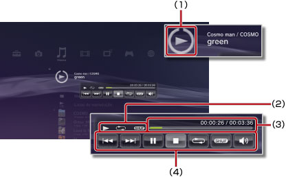

Música > Utilizando o minipainel de controle
Utilizando o minipainel de controle
Utilize o minipainel de controle para executar várias funções ao reproduzir música.
1. |
Ao reproduzir música, pressione o botão PS. |
||||||||
|---|---|---|---|---|---|---|---|---|---|
2. |
Utilize os botões de direção para selecionar o ícone do conteúdo de música sendo reproduzido em 
|
Dicas
- O ícone do conteúdo de música sendo reproduzido é exibido diretamente sob o ícone
 (Música).
(Música). - O minipainel de controle pode ser ocultado pressionando o botão
 ao reproduzir música.
ao reproduzir música.
Anterior

Volta para o início da faixa atual ou para a faixa anterior.
Próximo
Avança para o início da próxima faixa.
Pausar
Pausa a reprodução.
Parar
Para a reprodução e oculta o minipainel de controle.
Aleatório
Reproduz as faixas em uma ordem aleatória.
Repetir
Reproduz as faixas repetidamente. Você pode selecionar um dos três modos de repetição (mostrados abaixo) pressionando o botão  .
.
 |
Reproduz uma faixa repetidamente. |
|---|---|
|
Reproduz todas as faixas repetidamente. |
| Sem exibição | Limpa a repetição de reprodução e reproduz todas as faixas em ordem. |
Controle de volume
Ajusta o nível do volume de saída das faixas sendo reproduzidas em (Música). Você pode selecionar um dos nove níveis.
Dica
A saída de áudio poderá ficar distorcida se o nível do volume estiver alto demais. Se isto acontecer, abaixe o nível.